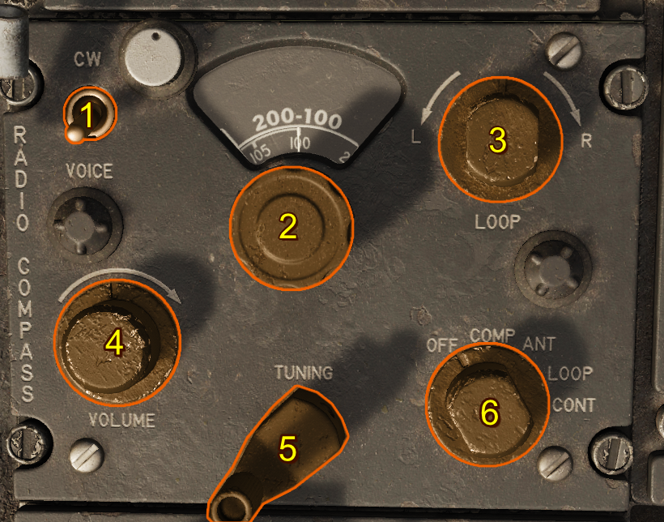

AN/ARN-6 Radio Compass
Introduction
The ARN-6 Radio Compass is an Automatic Direction Finder (ADF) receiver covering the frequency range of 100 kHz to 1750 kHz across four bands. It can be operated as a radio compass for navigation or used to monitor stations for weather reports and general communications reception.
The system employs a Beat Frequency Oscillator (BFO) in both Antenna and Loop modes. For signal conversion, a fixed intermediate frequency of 455.9 kHz is used on Band 1, while Bands 2, 3, and 4 operate at 143.4 kHz. When the equipment is in compass mode, a 900 Hz tone oscillator is engaged to modulate the CW signal as it passes through the IF stages, enabling precise direction-finding capability.
Controls

- CW/Voice Switch
- Band Selector Switch
- Loop L-R Switch
- Volume Control Knob
- Tunig Crank
- Function Switch
CW/Voice Switch
When the Voice-CW Switch is placed in CW, a beat frequency oscillator is energized in the ANT and LOOP position. With this oscillator, the modulated tone can be regulated with the tuning crank.
Band Selector Switch
This four-position switch enables the pilot to select the frequency band of the desired station. Usually the 100-200 kc band is used for marine beacons, 200-410 kc for range and radio beacons, 410-850 kc for some range and Navy radio beacons, and 850-1750 kc for commercial broadcasting.
Loop L-R Switch
This switch operates only when the function switch is in the LOOP position. A rheostat control allows the bearing pointer to rotate at variable speeds.
Volume Control Knob
This control regulates the volume of the signal to the headset in the COMP position. In the ANT and LOOP positions, it controls the sensitivity of the set.
Tuning Crank
The tuning crank is used to tune the desired station for maximum signal strength.
Function Switch
This five-position switch controls the operation of the radio compass.
| Function Selection | Description |
|---|---|
| OFF | The receiver is inoperative. |
| COMP/ ADF | The sensing and loop antennas and loop control circuits are selected. In this position, the loop is automatically rotated so that the bearing pointer points to the station. The COMP/ ADF position is the only one which provides automatic volume control to maintain an even level of volume in the headset. |
| ANT | The sensing antenna is selected and the radio compass is used as a low-frequency receiver. |
| LOOP | The loop antenna is selected. Signal reception depends upon the position of the loop in relation to the station. |
| CONT | This function is inoperative in F-100D aircraft. |
Normal Operation
-
Preflight
- Ensure the Function Switch is set to OFF before applying power.
- Verify that frequency cards and station lists are available for the area of operation.
-
Power On
- Set the Function Switch to COMP/ADF.
- Adjust the Volume Control Knob for comfortable headset audio level.
-
Tuning
- Use the Band Selector Switch to select the appropriate frequency band for the desired station.
- Rotate the Tuning Crank until maximum signal strength is obtained.
- If receiving a CW station, place the CW/Voice Switch in CW and fine-tune with the crank for best tone.
-
Direction Finding
- With the Function Switch in COMP/ADF, the loop antenna will rotate automatically and the bearing pointer will indicate the station’s direction.
- For manual loop operation, set the Function Switch to LOOP and use the Loop L-R Switch to rotate the loop antenna.
-
Monitoring
- To use the radio compass strictly as a receiver, set the Function Switch to ANT.
- Adjust the Volume Control Knob as required for clear reception.
-
Shutdown
- Return the Function Switch to OFF after use.
How a Beat Frequency Oscillator Works
A Beat Frequency Oscillator (BFO) is used in radio receivers to make continuous wave (CW) signals audible allowing the operator to accurately tune the receiver using the produced tone. When a CW signal is received, it consists of a steady carrier with no modulation. On its own, this signal produces no sound in the headset. The BFO solves this by introducing a locally generated frequency that is slightly offset from the received carrier.
Beating Frequencies
When the incoming carrier frequency and the BFO frequency are combined, the difference between them produces an audible tone in the audio range (typically around 400–1000 Hz).
For example, if the station signal is at 300.0 kHz and the BFO is set to 300.9 kHz, the difference is 900 Hz which is heard as a steady tone.
Fine Tuning to Zero Beat
By carefully adjusting the tuning crank, the operator brings the receiver frequency closer to the exact frequency of the station carrier. As the difference between the two signals decreases, the tone lowers in pitch. When the received signal and BFO frequency become exactly equal, the tone disappears, this is called zero beat.
Zero beating allows precise tuning to the station’s exact carrier frequency, which is essential for accurate direction finding and signal clarity.